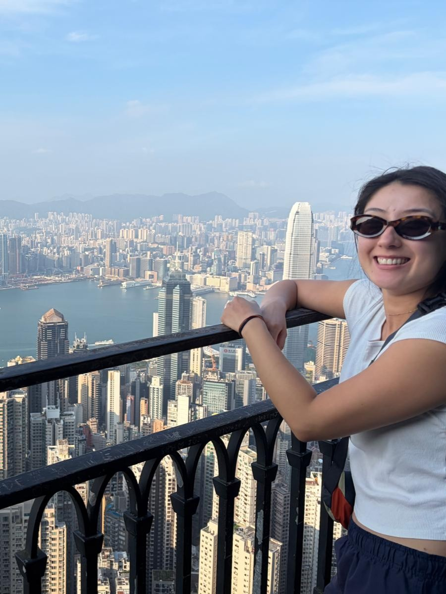

← Travel
Hong Kong 2026
Our last stopover before heading back home to Australia, Hong Kong...

16th September 2026
We hopped off the plane, quickly dropped our bags at the airport and headed on the train into the heart of Hong Kong city. We were after some food and we went into this Michelin starred restauraunt serving juicy and tasty goose. Afterwards we perused Donxiqote and got ourselves some milk tea while we looked at the various markets in the area. Afterwards we took a taxi up to the top of Victoria Peak and walked around to get amazing views of the city (and also get feasted on by mosqitoes, our first experience with them in a while!). We took the extremely steep train on the way back down and dealt with a touch of dehydration before heading back on the plane home.